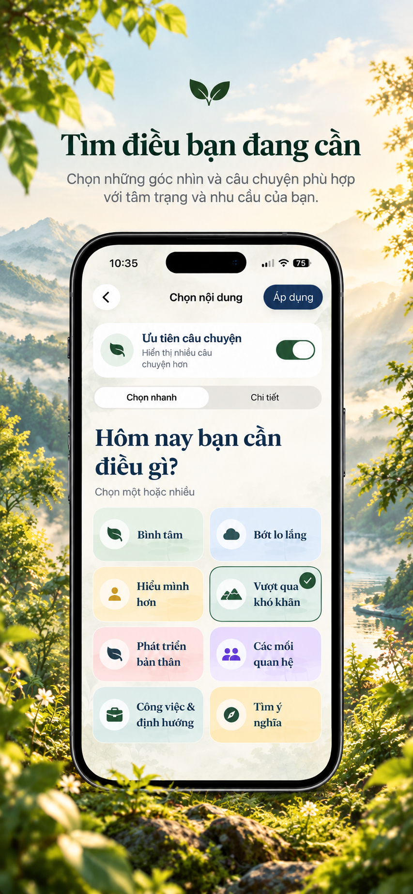
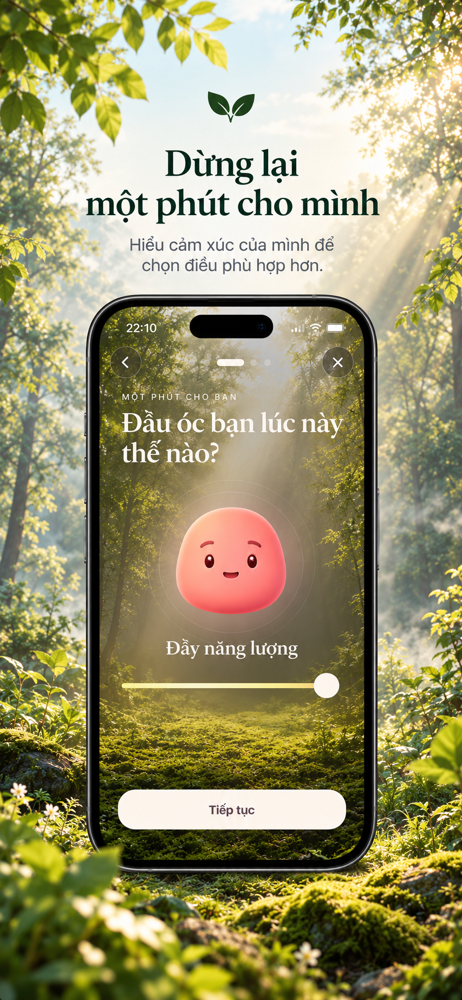
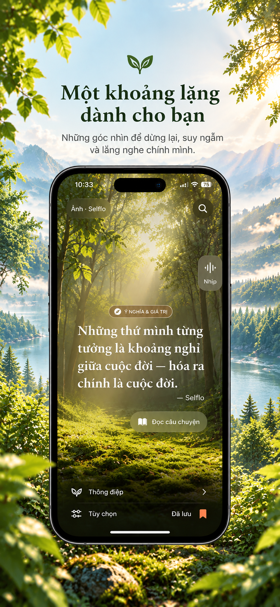
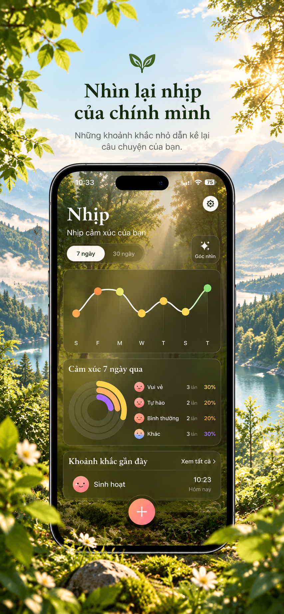
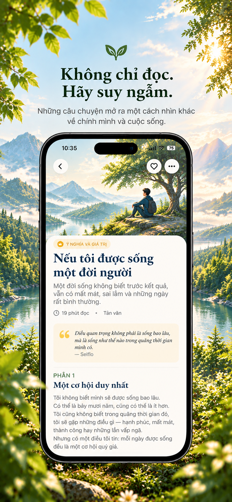

9:41● ᯤ ▰
GÓC NHÌN · Ý NGHĨA & GIÁ TRỊ
“Những thứ mình từng tưởng là khoảng nghỉ giữa cuộc đời — hóa ra chính là cuộc đời.”
SelfloĐọc câu chuyện →
Một khoảng lặng dành cho bạn
Selflo giúp bạn ghi lại cảm xúc, nhìn lại nhịp sống và gặp một góc nhìn vừa đủ—không phán xét, không biến trải nghiệm thành một bảng điểm.
GÓC NHÌN · Ý NGHĨA & GIÁ TRỊ
“Những thứ mình từng tưởng là khoảng nghỉ giữa cuộc đời — hóa ra chính là cuộc đời.”
Một nhịp nhỏ mỗi ngày
Gọi tên cảm xúc và điều đang liên quan mà không cần viết một trang dài.
Thấy những chuyển động gần đây mà không tự chấm điểm tốt hay xấu.
Đọc một câu ngắn, hoặc ở lại với một câu chuyện khi bạn muốn đi sâu hơn.
Selflo trên iPhone
Kéo ngang để xem các màn hình thật từ ứng dụng.





Câu chuyện nổi bật
Một đời sống không biết trước kết quả, vẫn có mất mát, sai lầm và những ngày rất bình thường.
Khám phá Góc nhìn →Riêng tư từ nền tảng
Không cần tài khoản.
Dữ liệu cốt lõi ở trên thiết bị.
Không quảng cáo và không theo dõi chéo.